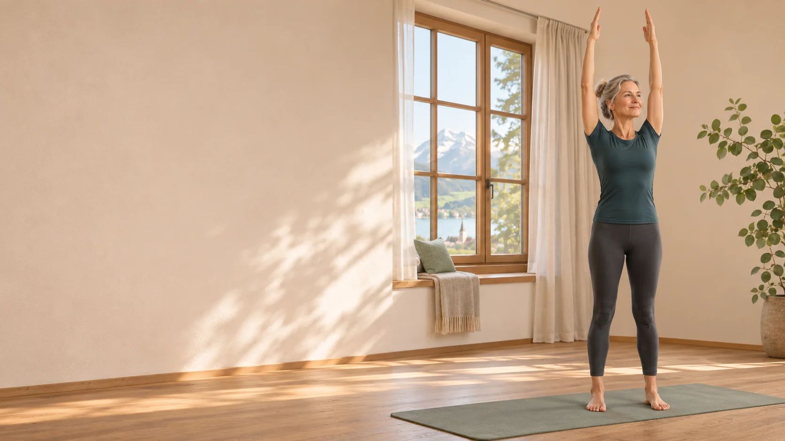
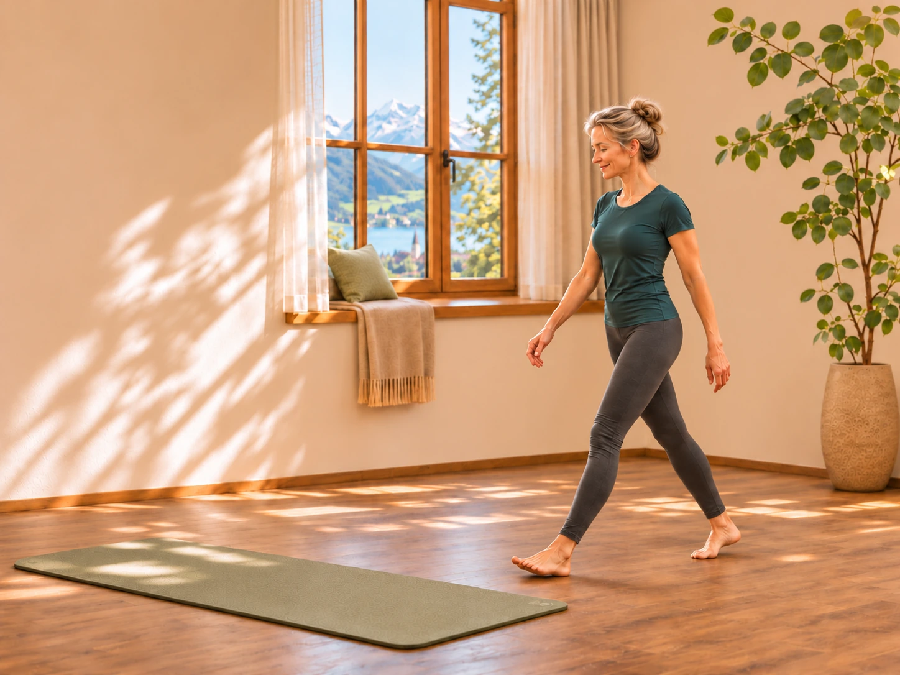

Starte bewegt
Recke und strecke dich nach dem Aufstehen. Bewege Schultern und Arme in Ruhe.

Ein bisschen Bewegung. Jeden Tag. Für dich.
Bewegung muss nicht kompliziert sein. Schon kleine aktive Momente können dir guttun – ganz ohne Leistungsdruck. Finde heraus, was zu deinem Alltag passt.
Zur StartseiteRegelmässige Bewegung unterstützt Herz, Muskeln, Gleichgewicht, Beweglichkeit und Wohlbefinden. Auch kurze aktive Pausen zählen.

Recke und strecke dich nach dem Aufstehen. Bewege Schultern und Arme in Ruhe.

Steh zwischendurch auf, geh ein paar Schritte oder lockere deine Schultern.

Nutze kurze Wege für einen Spaziergang – in deinem eigenen Tempo.

Bewege deine Gelenke langsam und ohne zu forcieren.

Steh kurz auf einem Bein und halte dich bei Bedarf an einer stabilen Fläche fest.

Ob Tanzen, Schwimmen, Radfahren oder Spazierengehen: Wähle etwas, das dir gefällt.
Kraft, Gleichgewicht und regelmässiges Gehen helfen, die Selbstständigkeit im Alltag zu erhalten. Beginne mit sicheren, einfachen Bewegungen und steigere dich nach deinen Möglichkeiten.
Schon kleine, regelmässige Übungen können im Alltag helfen. Wähle nur Bewegungen, bei denen du dich sicher fühlst – bei Unsicherheit gerne mit fachlicher Begleitung.
Setz dich auf einen stabilen Stuhl. Stell die Füsse auf den Boden und steh langsam auf, wenn nötig mit Unterstützung der Armlehnen. Setz dich kontrolliert wieder hin.
Halte dich an einer stabilen Küchenablage fest und hebe die Fersen langsam an und wieder ab. Vermeide ruckartige Bewegungen.
Steh aufrecht neben einer festen Ablage und verlagere dein Gewicht behutsam von einem Bein aufs andere. Bleib stets in Reichweite der Stütze.
Geh regelmässig kurze Strecken auf ebenem, gut beleuchtetem Weg. Trage rutschfeste Schuhe und verwende eine gewohnte Gehhilfe, falls nötig.
Richte dich auf einem stabilen Stuhl auf, bewege die Schultern sanft nach hinten und strecke abwechselnd die Knie so weit, wie es angenehm ist.
Steh – wenn es sicher möglich ist – mehrmals am Tag auf. Verbinde kurze Bewegungspausen mit festen Gewohnheiten, etwa nach den Mahlzeiten.
ⓘ Sicherheit geht vor: Benutze einen stabilen Stuhl ohne Rollen, halte dich bei Gleichgewichtsübungen an einer festen Stütze fest und vermeide Übungen mit Sturzrisiko. Bei wiederholten Stürzen, starker Unsicherheit oder neuen Beschwerden lass dich ärztlich oder physiotherapeutisch beraten.
Orientierung: In der Schweiz werden für ältere Erwachsene Kraft- und Gleichgewichtsübungen an mindestens zwei Tagen pro Woche empfohlen. Die WHO empfiehlt vielseitiges Gleichgewichts- und Krafttraining an drei oder mehr Tagen pro Woche. hepa.ch · BFU · WHO
Als allgemeine Orientierung empfiehlt die WHO Erwachsenen pro Woche 150–300 Minuten Bewegung mittlerer Intensität oder 75–150 Minuten intensivere Bewegung sowie kräftigende Aktivitäten an mindestens zwei Tagen. Für ältere Erwachsene sind zusätzlich Gleichgewichts- und funktionelle Kraftübungen an mindestens drei Tagen hilfreich. Auch weniger Bewegung ist besser als keine.
Stelle dir Übungen zusammen, wähle passende Intervalle und verfolge deine persönlichen Trainingszeiten. Dein Tempo. Deine Übungen. Deine Zeit.
Timer entdeckenHinweis: Diese Informationen dienen der allgemeinen Gesundheitsförderung und ersetzen keine medizinische Beratung. Übe nur im Rahmen deiner Möglichkeiten; stoppe bei Schmerzen, Schwindel oder anderen Beschwerden. Kläre gesundheitliche Einschränkungen bei Bedarf medizinisch ab.